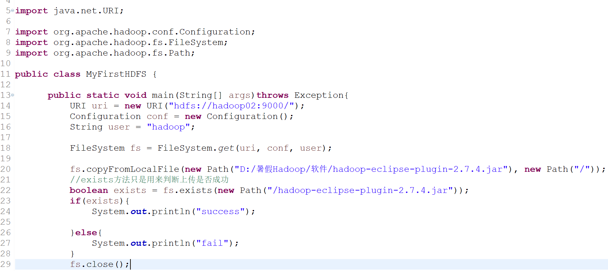
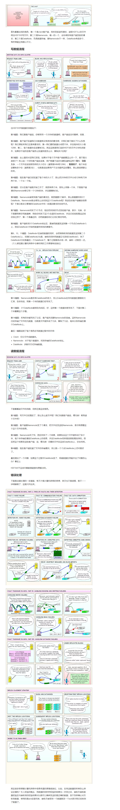

1、FileSystem和Configuration类的使用：
（1）最简单的上传文件到hdfs的方法

（2）打成jar包到linux来调用的方法

linux里的调用：

（3）上传文件的系统为本地Windows系统：

（4）通过配置使上传的文件系统为hdfs系统：
1）手动设置配置的方法：

2）让系统自动加载配置的方法：
加入自己在linux环境中修改过的core-site.xml 文件在src目录下，将conf.set注释掉，也可得到和上图一样的结果：

其中core-site.xml里面的的内容是：

得出结论：


3）手动加载配置文件的方式见下图：

（5）eclipse中读取配置信息的方法:
如果eclipse中没有加载hadoop集群中我们修改过的core-site.xml yarn-site.xml mapred-site.xml hdfs-site.xml 配置文件的话，那么如果是通过eclipse的代码来上传文件的话（区别于 在搭建好hadoop集群的linux某节点中上传文件），是会直接按照系统最开始的默认设置来上传文件，比如说fs.defaultFS会默认是本地文件系统，比如说上传的副本数本来修改成了2，结果上传后还是默认的3份。
所以我们要把hadoop集群中的配置文件下载下来再复制到eclipse项目中来。
优先级如下：

总结经验：

2、hdfs底层心跳机制的工作模式

3、副本存放策略：

4、HDFS读写数据流程:

———————————————————————手写与上传资料分割线—————————————————————
[hadoop@hadoop02 ~]$ hdfs getconf -namenodes
hadoop02
[hadoop@hadoop02 ~]$ hdfs getconf -confKey dfs.heartbeat.interval
3
[hadoop@hadoop02 ~]$ hdfs getconf -confKey dfs.replication
2
[hadoop@hadoop02 ~]$ hdfs getconf -confKey dfs.blocksize
134217728
副本存放策略：
一个数据块在默认情况下有3个副本。 这三个副本应该怎么分布在集群中？
为什么有这么个问题？
1、3个副本，绝对不会有任意两个副本会分布在同一个节点
2、这三个副本应该在那三个节点？
完全随机？ 不行
就直接把这个三副本块就放置在某个机架中的三个服务器里面。 不行
最合理的方式：
很满 很忙
所有这个副本快选择节点的策略都是 选择 不满 不忙的机器的机器进行存储
负载不均衡
---- 解决问题： ------> 使集群当中的所有节点的负载压力基本均衡
start-balance.sh
延迟加载的机制 jvm的垃圾回收机制
gc()